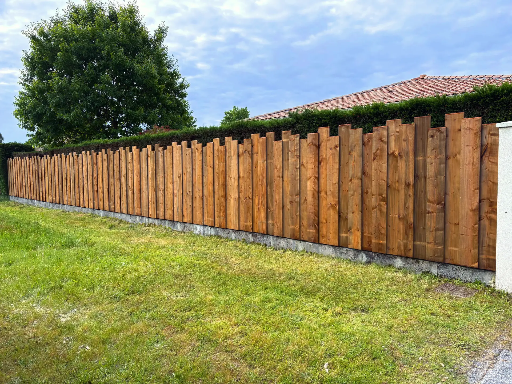
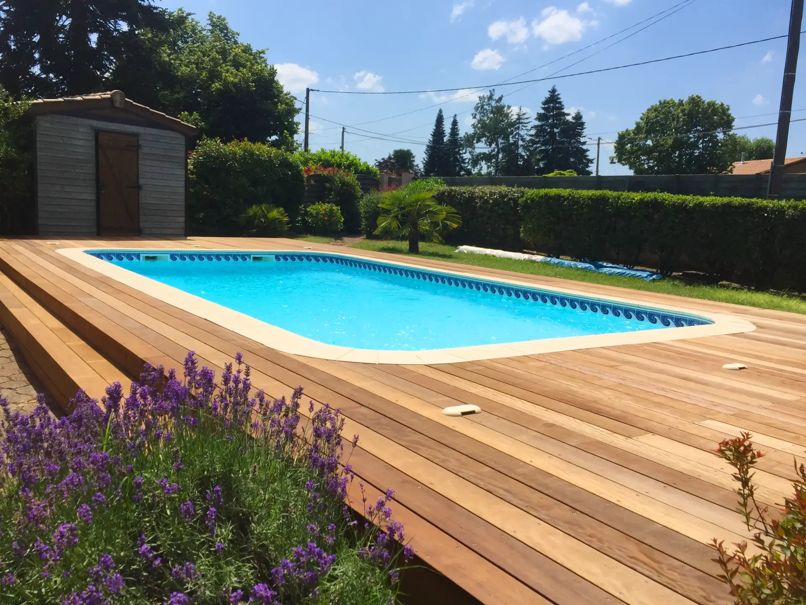
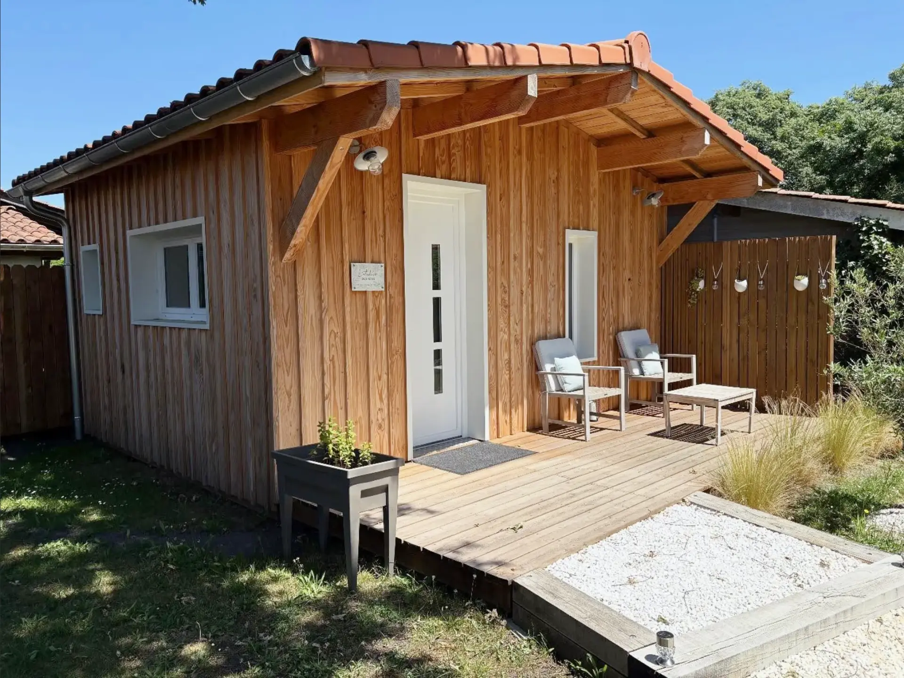
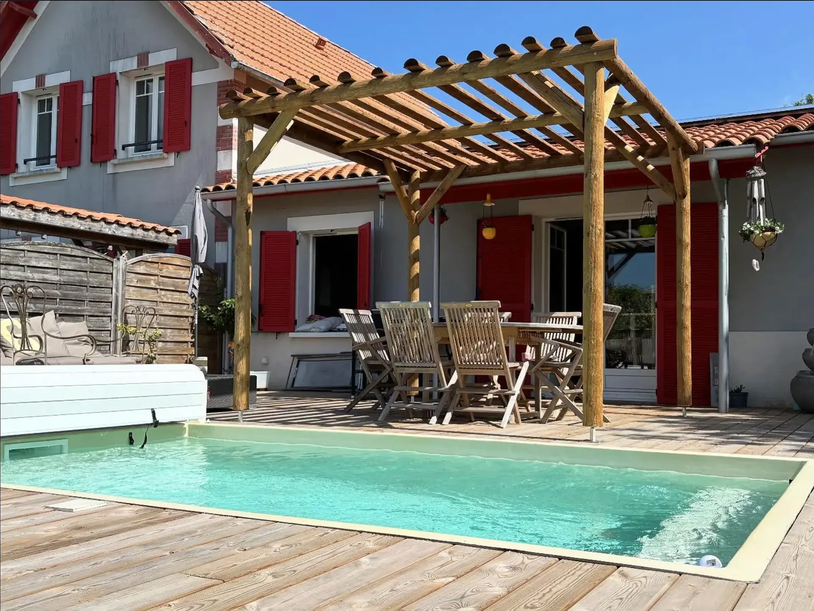
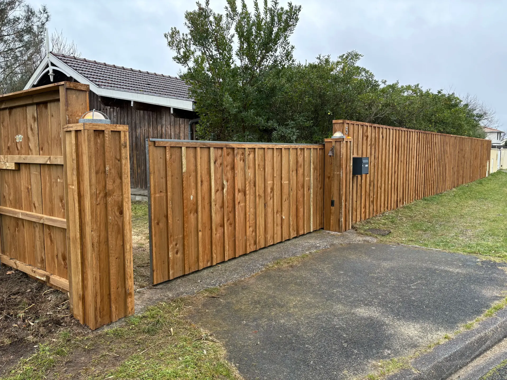
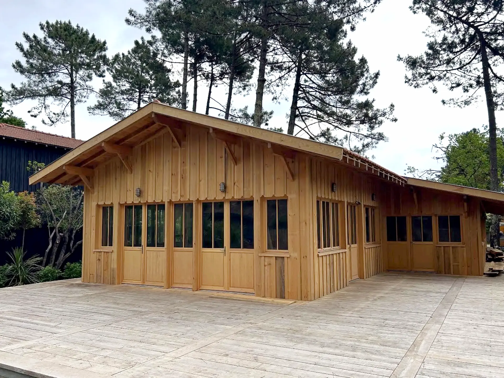
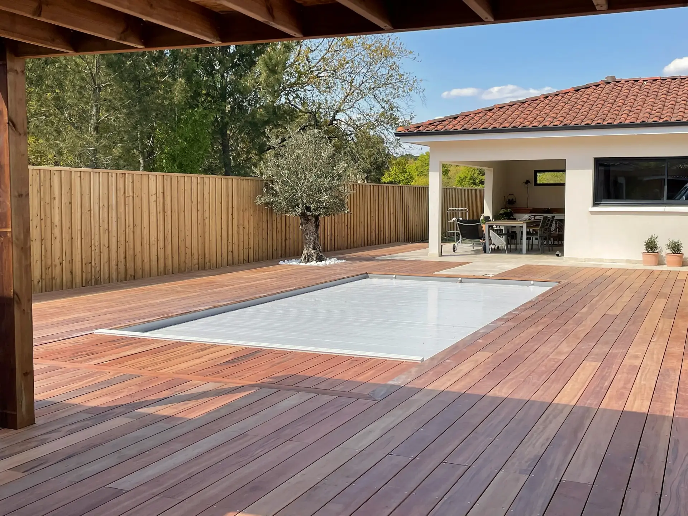
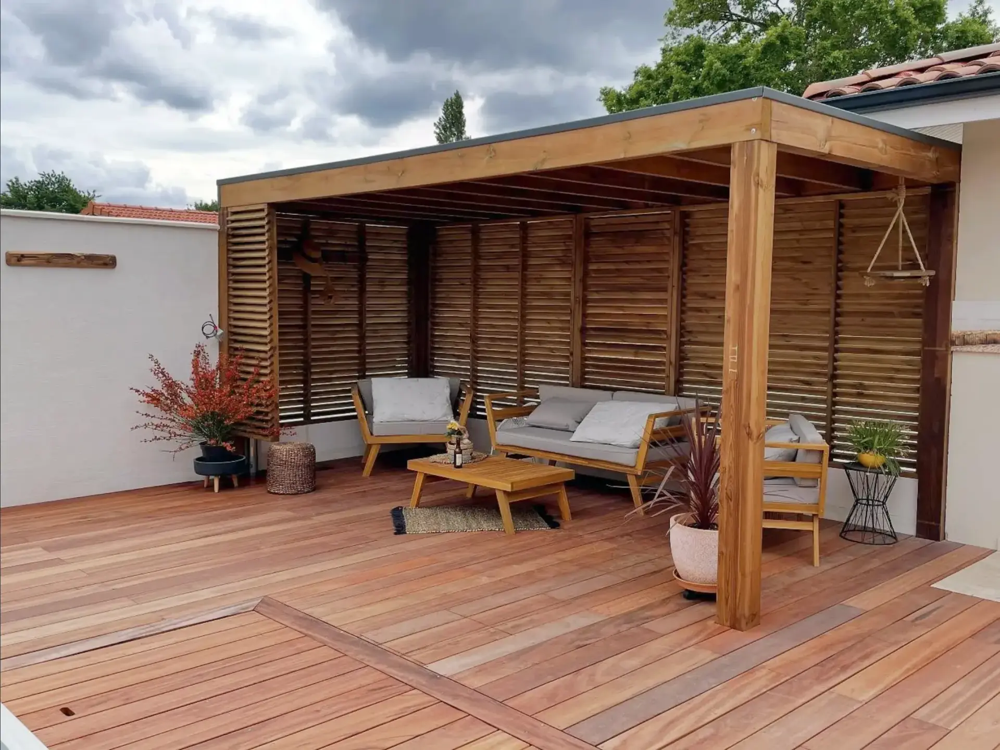
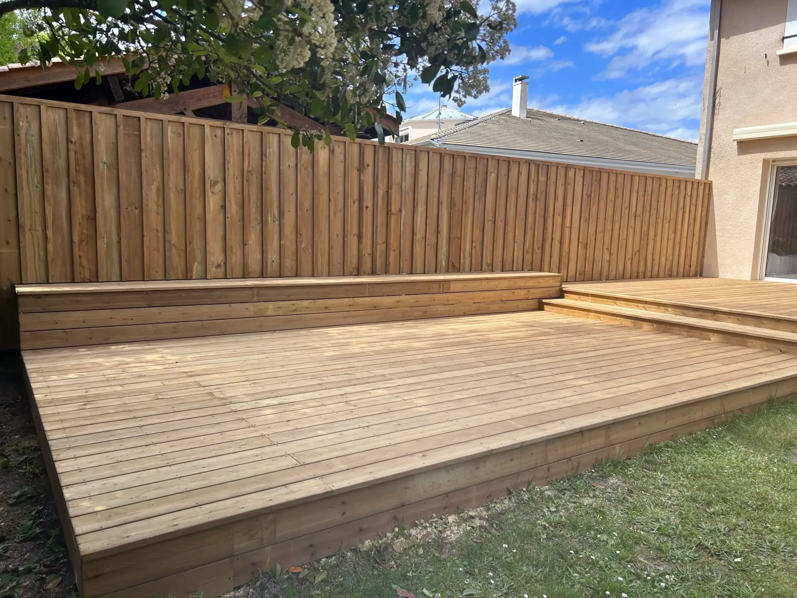

Élégance Bois - Artisan clôture et terrasse bois sur mesure à Saint-Jean d'Illac, Gironde
Le bois sur mesure, l'élégance accessible.
Spécialiste de la clôture et des terrasses sur mesure en Gironde. Des réalisations uniques pour sublimer votre espace.
Demander un devis gratuitNotre histoire
Élégance Bois incarne l'alliance rare entre raffinement artisanal et exigence contemporaine. Fondée sur plus de 15 ans d'expertise, notre entreprise s'adresse à celles et ceux qui recherchent bien plus qu'un simple ouvrage : une création pensée, façonnée et sublimée dans le respect du bois, de l'environnement et de votre style de vie.
Chaque réalisation — de la clôture traditionnelle à la terrasse sur mesure — est le fruit d'un dialogue attentif, d'un savoir-faire maîtrisé et d'une quête permanente d'excellence. Élégance Bois, c'est la promesse d'un luxe discret, chaleureux et durable.
Vous avez un projet en tête ? N'hésitez pas à nous contacter pour échanger autour de vos idées et bénéficier de l'accompagnement d'un professionnel passionné. Ensemble, donnons vie à un espace qui vous ressemble, avec exigence, élégance et respect des matériaux.
Nos services

Clôture Bois Sur Mesure
Conception et pose de clôtures bois sur mesure en Gironde : volige, ajourée, persiennée, clôture piscine. Du portail au brise-vue, des solutions durables et esthétiques pour votre jardin.

Terrasse Bois & Terrasse Piscine
Création de terrasses bois sur mesure : terrasse piscine, terrasse sur pilotis, terrasse multi-niveaux. Pin traité ou bois exotique selon vos envies et votre budget.

Extension & Abri Bois
Agrandissement en ossature bois, studio de jardin, carport et abri bois sur mesure. Performance thermique et intégration architecturale pour votre habitat en Gironde.

Pergola Bois Sur Mesure
Pergolas bois adossées ou autoportées, avec persiennes ou toile rétractable. Créez un espace extérieur élégant et ombragé, adapté au climat girondin.
Vous avez un projet en tête ?
Nous serions ravis de vous accompagner dans sa réalisation. N'hésitez pas à nous contacter pour discuter de vos besoins et obtenir un devis personnalisé.
Contactez-nousNos réalisations





Ce que nos clients disent
Questions fréquentes
Quel bois choisir pour une clôture en Gironde ?
En Gironde, nous recommandons le pin traité autoclave classe 4 pour sa résistance à l'humidité et aux insectes. Pour un rendu plus noble, le chêne ou le châtaignier sont excellents. Nous proposons également des essences exotiques comme l'ipé pour une durabilité maximale. Chaque projet est étudié selon votre environnement (proximité piscine, exposition) et votre budget.
Combien coûte une terrasse bois sur mesure à Bordeaux ?
Le prix d'une terrasse bois varie selon la surface, l'essence choisie et la complexité du terrain. En moyenne, comptez entre 80€ et 200€/m² pose comprise en Gironde. Nous réalisons des devis gratuits et personnalisés pour chaque projet à Saint-Jean d'Illac, Bordeaux, Arcachon et dans toute la Gironde.
Clôture bois ou PVC : que choisir ?
Le bois offre une esthétique naturelle, chaleureuse et s'intègre parfaitement dans les jardins girondins. Contrairement au PVC, il est écologique, personnalisable et prend de la patine avec le temps. Avec un traitement adapté, une clôture bois dure 15 à 25 ans. Nous conseillons le bois pour son authenticité et sa valeur ajoutée à votre propriété.
Comment entretenir une terrasse bois autour d'une piscine ?
Pour une terrasse piscine en Gironde, un nettoyage annuel au karcher basse pression et l'application d'un saturateur suffisent. Évitez l'eau de javel. Pour les essences exotiques, un simple rinçage régulier préserve leur beauté. Nous proposons également des contrats d'entretien pour maintenir votre terrasse en parfait état.
Quels types de clôtures bois proposez-vous en Gironde ?
Nous réalisons tous types de clôtures bois sur mesure en Gironde : clôture en volige, clôture ajourée, clôture persiennée, palissade, clôture bois piscine aux normes NF P90-306, ainsi que des portails et portillons assortis. Chaque modèle est personnalisable en hauteur, espacement et essence de bois. Nous intervenons à Saint-Jean d'Illac, Bordeaux, Saint-Médard-en-Jalles, Le Haillan et dans toute la Gironde.
Réalisez-vous des carports et abris bois à Saint-Jean d'Illac ?
Oui, nous concevons et installons des carports bois et abris de jardin sur mesure à Saint-Jean d'Illac et ses environs. Nos structures en ossature bois sont dimensionnées selon vos besoins (simple, double, adossé) avec des options de couverture et bardage personnalisées. Nous gérons également les démarches de déclaration préalable de travaux si nécessaire.
Terrasse bois sur pilotis : est-ce possible en Gironde ?
Absolument. La terrasse bois sur pilotis est idéale pour les terrains en pente ou surélevés, très courants en Gironde. Nous réalisons des structures sur poteaux bois ou métal avec plancher en bois exotique ou pin traité, incluant garde-corps et escalier d'accès. Ce type de terrasse nécessite une étude de sol que nous réalisons en amont. Nous avons déjà installé des terrasses sur pilotis à Saint-Médard-en-Jalles, Le Haillan, Mérignac et sur le Bassin d'Arcachon.
Dans quelles villes intervenez-vous autour de Saint-Jean d'Illac ?
Basés à Saint-Jean d'Illac, nous intervenons dans toute la Gironde (33) : Bordeaux, Mérignac, Pessac, Saint-Médard-en-Jalles, Le Haillan, Martignas-sur-Jalle, Cestas, Gradignan, Talence, Le Bouscat, Eysines, Blanquefort. Nous couvrons également le Bassin d'Arcachon (Arcachon, La Teste-de-Buch, Gujan-Mestras, Andernos-les-Bains, Lège-Cap-Ferret, Arès, Biganos, Audenge) et le Médoc (Le Taillan-Médoc, Saint-Aubin-de-Médoc, Parempuyre). Devis gratuit, déplacement offert.
Contactez-nous
Parlons de votre projet
Vous avez un projet en tête? Nous serions ravis de vous accompagner dans sa réalisation. N'hésitez pas à nous contacter pour discuter de vos besoins et obtenir un devis personnalisé.